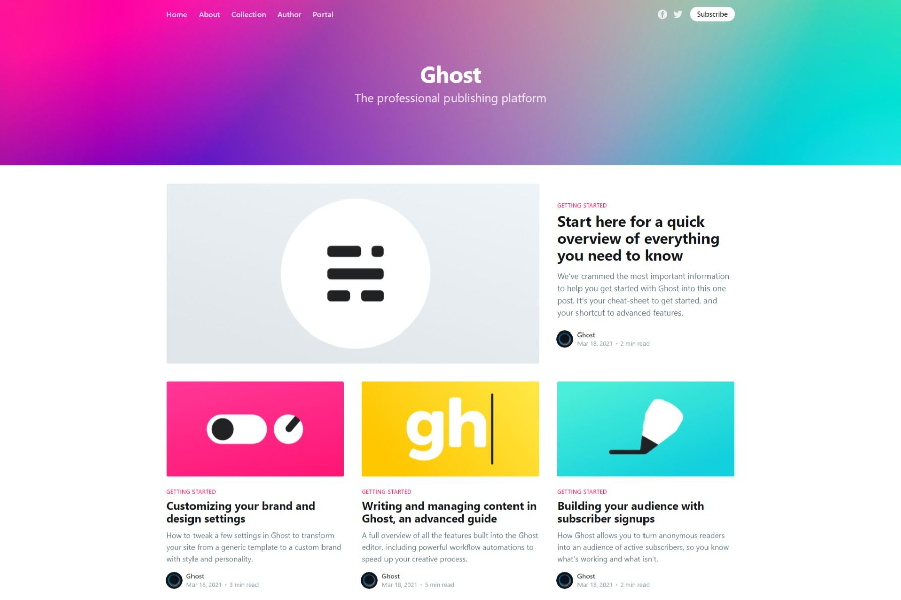
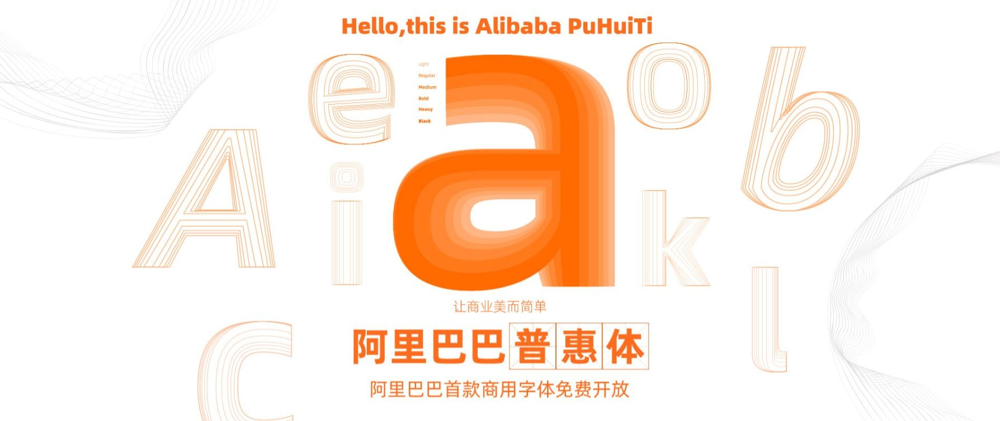

Litenote
Menu
HOME
网站
阅读
My blog！
耳机
分享
好文
数码
网站
阅读
WordPress
工具站
Ghost Docker Portainer Nginx
Ghost的Tags[标签]功能
旅行站
Jetpack Boost
Markdown Guide
Excel 多重条件选择

Ghost主题Casper
建博客与写文章

阿里巴巴普惠体
资源站
网站性能测试
‹ Previous
1
2
3
4
5
6
7
Next ›